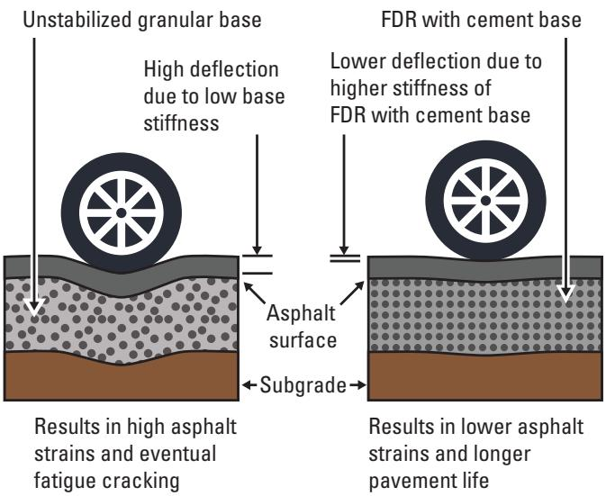
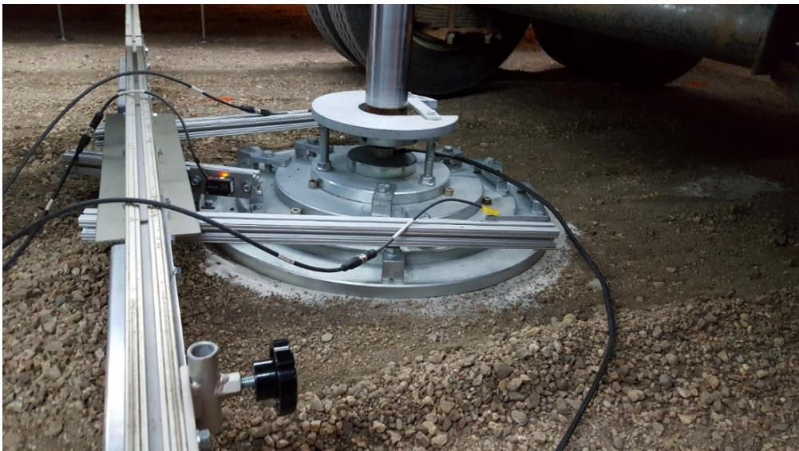
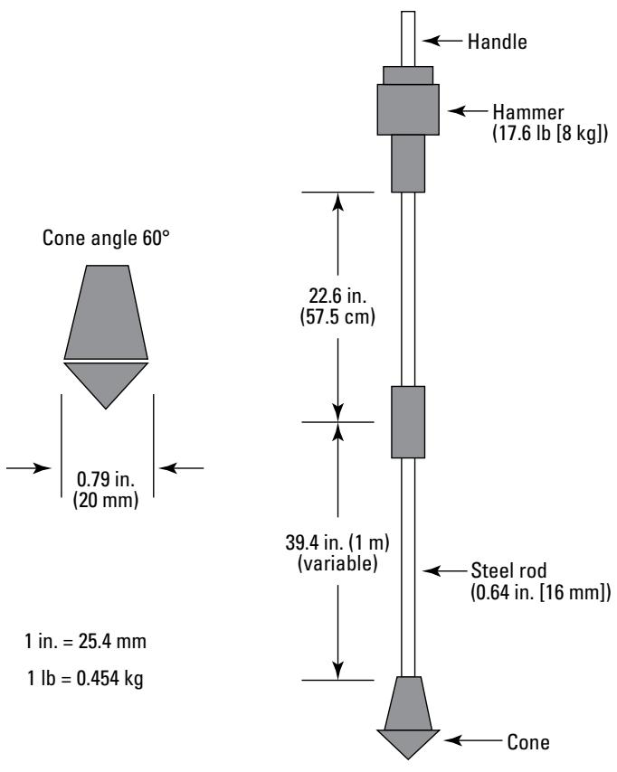
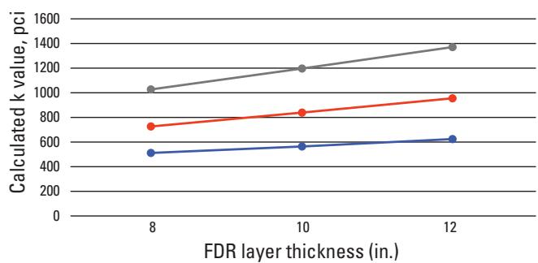
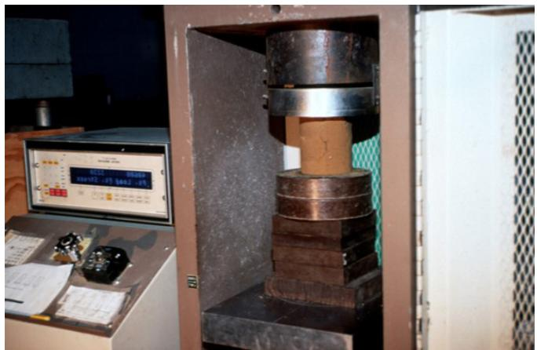
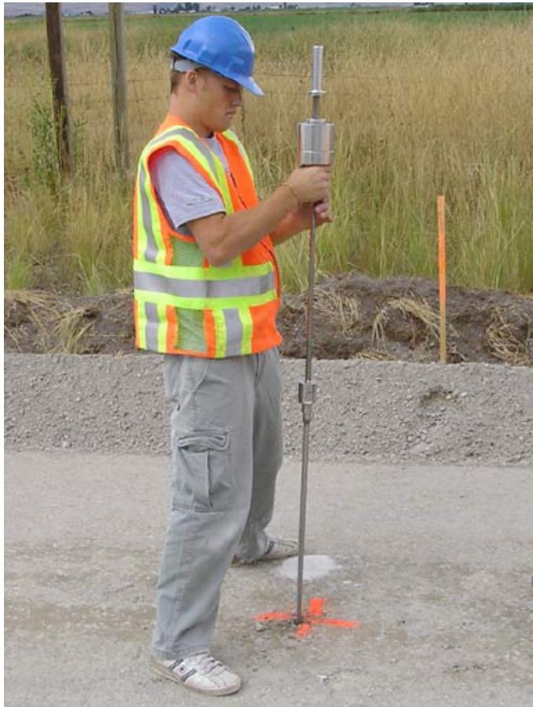
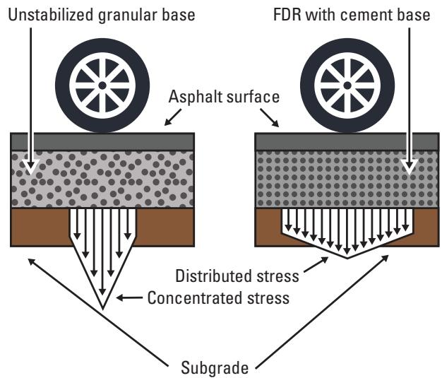
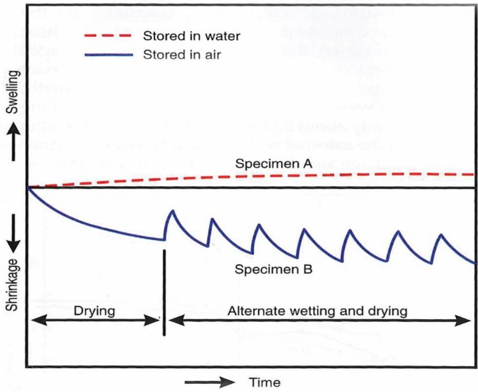

Cement-Stabilized FDR Stiffness Assessment
The Cement‑Stabilized FDR Stiffness Assessment is a geotechnical evaluation that quantifies the uniformity, strength and deformation behavior of the subgrade intended to support a cement‑stabilized full‑depth reclamation (FDR) base [3]. By measuring in‑situ penetration rates with a dynamic cone penetrometer after at least three days of curing—requiring an index of ≤10 mm per blow—it provides rapid, inexpensive estimates of bearing capacity, resilient modulus (M_r) or k values and convertible CBR values that serve as acceptance criteria for early traffic opening and subsequent pavement design [3][8]. Complementary core extraction and laboratory testing of the reclaimed mix further refine resilient‑modulus, density and strength inputs, confirming long‑term stiffness and load‑supporting capacity required by mechanistic‑empirical designs [3][7]. Together these field and lab components ensure that the cement‑stabilized layer meets prescribed structural capacity and functional performance throughout its service life [3][10].
Sources (14)
Purpose and investigation objectives
The Cement‑Stabilized FDR Stiffness Assessment focuses on the subgrade soil that will support a cement‑stabilized full‑depth reclamation (FDR) base. It evaluates the uniformity, strength and deformation characteristics of this subgrade to verify it can meet pavement design requirements, and specifically measures its stiffness and bearing capacity. The investigation must determine whether the in‑situ DCP index after three days of curing is at or below the 10 mm per blow threshold; meeting this limit indicates the layer has sufficient rigidity for construction traffic and that the subsequent pavement can be placed safely. [3]
[3] — Ch. 4 (pp. 48–49), Ch. 5 (pp. 64–65), Ch. 7 (p. 93)
The stiffness assessment of cement‑stabilized FDR layers supplies engineers with quantitative parameters that are directly applied throughout the project life cycle. The guides state that “The stiffness values obtained from cement‑stabilized FDR assessments give engineers a reliable measure of subgrade uniformity, strength and deformation behavior, which can be directly used to select appropriate Mr (for flexible pavements) or k (for rigid pavements) design parameters.” This measurement, together with the ability to rapidly estimate CBR, is highlighted by “The DCP can be used to rapidly estimate the California Bearing Ratio (CBR) or other soil strength/deformation parameters of the base and subgrade layers,” and by “The DCP results give a rapid, inexpensive quantification of the cement‑stabilized FDR layer’s resistance to penetration, which directly reflects its stiffness and bearing capacity.” The in‑situ DCP index also serves as an acceptance criterion: “When the measured DCP index after three days is ten millimetres per blow or less, the subgrade meets the required stiffness, allowing planners to schedule early opening to traffic and to proceed with asphalt, chip seal, or concrete without risking surface damage.”
Laboratory testing of extracted cores further refines design inputs: “Laboratory testing of cores from the cement‑stabilized FDR provides a measured resilient modulus and in‑place density that quantify layer stiffness and settlement potential,” supporting decisions on pavement thickness, traffic load limits, mix proportions and future maintenance. The long‑term performance is confirmed by “The long‑term strength data from reclaimed FDR sections give engineers a direct measure of in‑place stiffness and load‑supporting capacity, confirming that the material generally exceeds its original design targets and providing the resilient modulus required by mechanistic‑empirical pavement design procedures.”
By averaging penetration rates, practitioners can delineate strata: “The penetration rates obtained from a dynamic cone penetrometer test give a direct indication of the in‑situ stiffness of cement‑stabilized FDR layers and adjacent subgrade soils; by averaging rates at defined points within each layer engineers can delineate layer boundaries and convert the DCP index to an estimated CBR value.” These estimates “allow planners to verify that the stabilized layer meets required design criteria, guide designers in selecting appropriate thicknesses or additional stabilization, and give maintenance crews a quantitative baseline for detecting progressive weakening from intermixing, thereby informing rehabilitation timing and scope.”
Additional soil‑property data enhance mix‑design decisions: “Both a substantial reduction of a clayey soil’s expansion potential and an increase in SL indicates not only an improvement in the volume change characteristics of the soil but also greater workability and stability,” while “The resilient modulus is a measure of subgrade material stiffness.” The DCP’s role in converting strength to CBR is reiterated: “Dynamic cone penetrometer (DCP) … measures the strength and deformation properties of a subgrade, enabling conversion to CBR values for each soil layer and identification of zones requiring further treatment.”
Collectively, these findings enable planners to decide on cement content, treatment depth, layer thicknesses, compaction specifications, construction traffic limits, early‑opening schedules, and long‑term maintenance or rehabilitation strategies, ensuring that the treated base delivers the required performance throughout its service life. [3][7][8][10]
[3] — Ch. 4 (pp. 48–49), Ch. 5 (pp. 64–65), Ch. 7 (pp. 93–96); [7] — Ch. 4 (p. 296), Ch. 19 (pp. 470–472); [8] — Ch. 3 (pp. 66–67); [10] — Ch. 2 (pp. 21–24), Ch. 3 (pp. 28–33)
Scope and applicability
Cement‑stabilized FDR stiffness assessment is appropriate for both flexible and rigid pavements where a full‑depth reclaimed (FDR) base provides structural support. It is especially indicated on major arterial routes with suspected unstable or weak subgrades, and whenever a reclaimed‑material layer will be placed over a soft, low‑bearing or highly deformable subgrade—such as clay or silty soils that exhibit moisture‑induced plasticity changes or frost susceptibility. The method applies when the FDR mix contains a significant proportion of fines (≥20 % passing No. 200 sieve) or when treatment depth extends into the subgrade, requiring higher cement contents (typically 2–4 %) to achieve comparable strength. It is suitable for granular bases (sand, gravel, RAP) as well as fine‑grained soils; excessive fines may be mitigated by adding coarse material rather than increasing cement. The assessment also supports early opening to traffic after three days of curing provided the in‑situ DCP index meets the required threshold, and it can be used for long‑term verification of strength and resilient modulus through core sampling and UCS or seismic testing for mechanistic‑empirical design. [3]
The figure below illustrates how this stabilization reduces strains on the asphalt surface layer compared to an unstabilized granular base.

Comparison of pavement deflection and strain between unstabilized granular base and FDR with cement base. [3]The figure illustrates a side-by-side comparison showing that an unstabilized granular base results in high deflection due to low stiffness, whereas an FDR with cement base exhibits lower deflection due to higher stiffness.
[3] — Ch. 4 (pp. 48–49), Ch. 5 (pp. 64–67), Ch. 7 (pp. 93–96)
The cement‑stabilized FDR stiffness assessment is constrained by several documented limitations. First, approaches that rely solely on soil‑type correlations “can miss critical variations in subgrade strength, especially on projects where the stakes are high; the approach is limited by its reliance on assumed rather than measured properties.” Second, when the assessment depends on DCP testing it “is limited to shallow, in‑situ strength measurements and may not reveal deeper or more severe subgrade weaknesses; when the existing pavement lacks reliable historic data or exhibits high‑severity deformation, a simple DCP survey alone is insufficient and a complementary method such as a falling weight deflectometer should be employed to fully evaluate support conditions before proceeding with cement stabilization.” Across sources this shallow depth is quantified: “It evaluates support conditions to a depth of approximately 4 feet (1.2 m).” Third, the equipment imposes practical limits; the test “uses a 16.7‑pound drop hammer that falls along the penetrometer shaft to drive a cone attached to a steel rod into the pavement or subgrade,” and for unusually weak or stiff soils the standard hammer may not provide reliable results, requiring lighter‑weight versions. Fourth, the method depends on indirect correlations and timing constraints: “requires that a core be extracted first and the test performed before the sample is removed; this timing constraint can restrict field logistics.” Finally, field‑based stiffness assessments cannot capture critical material properties: “specific details regarding the soundness of the aggregates, moisture sensitivity, strength/deformation characteristics, and other important properties may require laboratory testing of field extracted material samples,” and at a minimum “the base course gradation, moisture content, thickness, subgrade gradation, Atterberg limits, and moisture content should be determined.”
Consequently, additional or complementary investigations are recommended whenever any of these limitations are likely to affect reliability. The guides advise employing alternative methods when deeper layer stiffness is required (e.g., laboratory CBR or plate‑load tests), for major arterials, unstable subgrades, lack of historic geotechnical records, high‑severity deformation, or an inexperienced design team, and when confidence in gradation, moisture content, Atterberg limits, or aggregate condition is needed. Suitable complementary techniques include material sampling with laboratory testing, comprehensive DCP surveys combined with falling weight deflectometer measurements, and classification of the pulverized mix using AASHTO soil classification. [3][7]
[3] — Ch. 4 (pp. 48–49), Ch. 5 (pp. 64–67); [7] — Ch. 19 (pp. 470–481)
Existing information and records
The assessment begins with a desktop study that gathers all available site information, including the USDA soil survey reports for the county and any existing record drawings, photo surveys, previous subsurface reports, boring logs, and laboratory test results. Reviewers should also locate all original geotechnical investigation and construction records, including the pavement design assumptions and any soil‑type correlation data used for the project. Condition surveys that document high‑severity base or subgrade deformation must be examined, and photographs of distressed pavement sections should be reviewed when repairing an existing roadway to capture pre‑repair conditions. Maintenance histories should be reviewed to identify excessively deferred upkeep, while traffic data—especially volumes that have grown beyond the original design—are needed to assess whether the existing support system remains adequate. Prior material sampling results, laboratory test reports, and earlier non‑destructive testing records such as dynamic cone penetrometer (DCP) or falling weight deflectometer (FWD) measurements are essential for evaluating subgrade uniformity, strength, and deformation characteristics. [3][10]
[3] — Ch. 4 (pp. 48–49), Ch. 5 (pp. 64–65); [10] — Ch. 3 (p. 28)
The available records are repeatedly noted to lack the detail needed for a reliable stiffness assessment of cement‑stabilized FDR layers. Across the guides, the documentation is described as providing only generic soil‑type correlations and missing full‑depth material descriptions, leaving uncertainty about what will actually be incorporated into the stabilized mix. The sampling guidance cited is limited to shallow block samples (six inches below the anticipated bottom of the FDR) and does not capture spatial variability in pavement or base thicknesses, nor deeper subgrade properties that govern deformation behavior. In addition, critical parameters such as aggregate soundness, moisture sensitivity, strength‑deformation characteristics, base‑course gradation, moisture content, and Atterberg limits are often absent from the records. Moisture conditions are also poorly documented, with reports of “excessive moisture resulting in an unstable subgrade” and unreported zones of undesirable clays and silts. Finally, the existing guidance for interpreting DCP results is inconsistent; automated DCP testing yields CBR values that are about 15 % greater than those derived from manual DCP testing, and no calibrated correlation specific to cement‑stabilized material is provided.
To resolve these gaps, field investigation must: develop a zone‑based sampling plan that obtains full‑depth core and auger samples; conduct laboratory tests for sieve analysis, liquid limit, plasticity index, aggregate soundness, and moisture content; verify subgrade uniformity, strength, and deformation characteristics; and perform calibrated DCP testing (or alternative modulus measurements) to establish reliable stiffness values. The following verbatim statements from the sources underscore these needs:
- “The samples should be examined throughout their full depth to determine the physical properties of the proposed FDR mix.”
- “Testing of the subgrade is desirable to ensure there will be a solid foundation beneath the proposed FDR layer.”
- “The soil conditions on which the FDR base is to be constructed should be thoroughly evaluated in terms of uniformity, strength, and deformation characteristics.”
- “The DCP test will assist in measuring the strength of the soil that will be directly under the FDR layer.”
- “specific details regarding the soundness of the aggregates, moisture sensitivity, strength/deformation characteristics, and other important properties may require laboratory testing”
- “At a minimum, the base course gradation, moisture content, thickness, subgrade gradation, Atterberg limits, and moisture content should be determined.”
- “CBR values computed using automated DCP results … are about 15% greater than CBR values computed using the DPI computed from the manual DCP”
- “excessive moisture resulting in an unstable subgrade”
- “discovery of areas of undesirable clays and silts that had not been previously reported”
These actions directly address the identified record deficiencies before final design decisions are made. [3][7][8][10]
[3] — Ch. 3 (p. 43), Ch. 4 (pp. 48–49), Ch. 5 (pp. 64–67); [7] — Ch. 19 (p. 481); [8] — Ch. 3 (pp. 66–67); [10] — Ch. 3 (p. 28)
Visual inspection and condition assessment
Across the guides, inspectors are instructed to visually screen cement‑stabilized FDR for a suite of surface distress indicators. Rutting that “rutting may develop under wheel paths over time” is a primary sign of weak subgrade support. Pavement settlement and heave, together with any noticeable unevenness caused by “limit excessive deflection,” point to underlying deformation. The guides also call out “high‑severity base or subgrade deformation” as a critical visual cue. Additional manifestations such as cracking, shattered slabs, and faulting—summarized as “evaluate settlement, heaves, cracking, shattered slabs, and faulting”—signal excessive plasticity or moisture sensitivity in the fine‑graded dense layer. Collectively, these visible distresses—rutting, settlement/heave, unevenness from deflection, high‑severity deformation, cracking, slab shattering, and faulting—direct further investigation through core extraction and laboratory testing. [3][7]
[3] — Ch. 5 (pp. 64–65); [7] — Ch. 4 (p. 296), Ch. 19 (p. 483)
Field measurements and testing
Assessment of cement‑stabilized FDR stiffness relies on a combination of nondestructive field tests and targeted sampling. The primary nondestructive method is the Dynamic Cone Penetrometer (DCP); “The dynamic cone penetrometer (DCP) is a device for measuring the in situ strength of paving materials and subgrade soils.” During testing, “During a DCP test, the cone penetration (typically measured in millimeters or inches) associated with each drop is recorded,” producing a DCP penetration index (mm/blow). This index “can be correlated to the modulus of resilience (Mr), which serves as an indicator of stiffness” and “Because this index correlates empirically with California Bearing Ratio values, it can be used to infer relative stiffness and to locate layer boundaries within the stabilized section.” An “in‑situ DCP index of ≤10 mm/blow after three days of curing … considered acceptable for traffic opening.” The DCP also provides rapid estimates of CBR, serving as a proxy for stiffness: “The Dynamic Cone Penetrometer (DCP) is the primary test; by driving the weighted cone through existing core holes to about 3–4 ft and recording the penetration rate, it provides a rapid estimate of strength/deformation parameters such as the California Bearing Ratio (CBR), which serves as a proxy for stiffness.”
Complementary nondestructive techniques include the Falling Weight Deflectometer (FWD). “The FWD records surface deflections under a known load; these deflections reflect the composite stiffness of the cement‑stabilized FDR layer together with the supporting soils.” The FWD therefore “measures surface deflections to infer overall structural stiffness.”
When higher accuracy is required, full‑scale plate load testing may be employed. “When higher accuracy is required, full‑scale plate load tests can be performed—the actual k value is determined directly by full-scale plate load tests,” and the plate‑load test “yields a direct estimate of bearing capacity and elastic modulus.”
Destructive sampling provides material for laboratory verification. “Coring—ASTM C42 and C823 provides cylindrical samples that can be visually inspected for distress or honeycombing and then tested for compressive strength, modulus of elasticity (the primary indicator of stiffness), coefficient of thermal expansion, and petrographic characteristics.” Core sampling is described as “the primary field measurement used to assess cement‑stabilized FDR stiffness,” with frequency adjusted to street length. Thin‑walled tube (Shelby) sampling and standard penetration testing are also used; the SPT “gives a relative density index that correlates with in‑situ stiffness.” Auger or Shelby tube samples are analyzed for classification, gradation, moisture, density, sulfate resistance, Atterberg limits, and resilient modulus—“the latter providing a direct indicator of soil stiffness.”
Laboratory tests on collected material support the field evaluation. When “the sieve analysis shows at least 20 percent of the combined mixture passes the no. 200 sieve, performing Atterberg limits testing is recommended; the liquid limit, plastic limit, and especially the plasticity index provide an indication of the cohesive nature of the fines.” The resilient modulus derived from lab tests further quantifies stiffness.
Together, these methods—DCP, FWD, plate‑load test, core/augur sampling, SPT, and associated laboratory analyses—provide a comprehensive picture of cement‑stabilized FDR layer stiffness and its support conditions. [3][7][8][10][13]
The figure below illustrates automated plate load testing used to directly measure the modulus of subgrade reaction and resilient modulus.

Automated plate load testing apparatus measuring subgrade modulus. [7]The image displays a circular metal loading plate resting on the ground surface, connected to a vertical hydraulic actuator and surrounded by instrumentation cables.
[3] — Ch. 4 (pp. 48–49), Ch. 5 (pp. 64–67), Ch. 7 (p. 93); [7] — Ch. 4 (p. 296), Ch. 19 (pp. 470–481); [8] — Ch. 3 (pp. 66–67); [10] — Ch. 3 (pp. 31–33); [13] — Ch. 3 (pp. 61–62)
The guides specify that cement‑stabilized FDR stiffness is evaluated with a dynamic cone penetrometer (DCP) conforming to ASTM D6951. The equipment consists of a 0.625‑in diameter steel rod (or a cone attached to a rod), a hardened point set at a 60° angle, and a drop hammer—generally a 17.6 lb hammer released from a fixed height of 22.6 in; newer versions may employ a 10 lb hammer for weaker soils. The operator holds the device vertical or plumb, lifts and releases the hammer to drive the cone into the material through a small core hole in the pavement, recording penetration per blow. An in‑situ DCP index of ≤10 mm per blow after at least three days of curing is considered acceptable before placing the next pavement layer, indicating sufficient stiffness for construction equipment. The guides do not prescribe test spacing or testing frequency, and they note that testing should be performed under normal site conditions following the minimum cure period. [3][8]
The figure below illustrates the dynamic cone penetrometer used for this stiffness assessment.

Schematic diagram of a dynamic cone penetrometer (DCP) showing its primary components and dimensions. [8]The figure displays the assembly of a dynamic cone penetrometer, which consists of a handle, a sliding hammer, a steel rod, and a pointed cone at the base. The device is designed to measure in situ strength by driving the cone into paving materials or subgrade soils using a drop hammer that slides along the penetrometer shaft. The apparatus features a 60-degree cone angle and utilizes a specific hammer weight released from a fixed height to penetrate the material.
[3] — Ch. 7 (p. 93); [8] — Ch. 3 (pp. 66–67)
Sampling and laboratory investigation
The sampling program must capture every material that will become part of the cement‑stabilized FDR layer. Accordingly, the assessment should sample the existing asphalt pavement, any underlying aggregate layers, and the subgrade soil, examining each material through its full depth to obtain the physical properties needed for mix design. Samples are also required from each soil stratum that will be treated, including both clay and granular layers within the pavement’s influence zone (generally the top five ft below surface).
Sampling locations are selected by first reviewing record drawings and dividing the project into zones of similar material types; a field sampling plan is then developed to provide representative coverage across those zones. Locations are further spaced according to soil variability—more frequent pits where soils change rapidly, with a typical spacing of 400 to 1,000 LF (or one per urban block) on more uniform sections—and samples should be obtained at points where thickness or material type changes within the project limits.
At each location core or auger samples are taken to a depth of 6 in. below the anticipated bottom of the FDR layer, and a split‑barrel sampler is driven into each stratum until it has penetrated six inches (150 mm) to record blow counts for relative strength. For laboratory analysis about 200–300 lb of material is collected from every identified stratum; where larger quantities are needed grab samples may be taken by auger.
The number of locations, depths of cores, quantity of samples and testing frequency are scaled to project significance. Minor residential streets may rely on limited soil‑type correlations, while major arterials or sites with suspected unstable subgrade require a more intensive program of multiple, deeper samples across the FDR footprint and repeated stiffness tests. Overall sampling frequency is set by project size and the degree of soil type variation across the site. [3][10]
[3] — Ch. 3 (p. 43), Ch. 4 (pp. 48–49), Ch. 5 (pp. 63–64); [10] — Ch. 3 (pp. 32–34)
The laboratory program for cement‑stabilized FDR stiffness assessment integrates a suite of tests to characterize gradation, classification, moisture condition, mechanical response, and potential deterioration mechanisms. The guides agree that “The laboratory program for a cement‑stabilized FDR layer should include a sieve analysis together with Atterberg limit testing (liquid limit and plasticity index) so that the soil can be classified according to AASHTO procedures.” In addition, “The laboratory program for cement‑stabilized FDR stiffness assessment must determine the material’s gradation, classification, moisture condition, and mechanical response.” To define gradation, “Tests include a particle size analysis to define gradation,” while plastic behavior and volume change are evaluated by “the Atterberg limits (plasticity index, shrinkage limit, plastic limit and liquid limit) to evaluate plastic behavior and volume‑change potential,” and moisture influence is captured by “measurement of in‑situ moisture content to assess the water condition that influences cement hydration and stiffness development.” Strength and stiffness are quantified through several core‑based tests. Core sampling follows standards: “Cement‑stabilized FDR stiffness assessment should include laboratory testing on core samples taken in accordance with ASTM C42 and C823,” using appropriate diameters as described: “using 4‑in. diameter cores for strength tests (or 6‑in. cores when the aggregate size exceeds 1.5 in.) and 2‑in. cores when only thickness verification is required.” Core testing includes compressive strength and modulus measurements: “The key lab measurements are compressive strength, modulus of elasticity, and coefficient of thermal expansion, which together define the material’s load‑bearing capacity and stiffness,” and also “Representative core samples of the reclaimed base are obtained and subjected to laboratory unconfined compressive strength (UCS) measurements to quantify long‑term in‑place strength,” while dynamic stiffness is assessed by “while seismic modulus testing—typically with a free‑free resonant column—is performed to derive the resilient modulus that reflects the material’s stiffness and its capacity to support traffic loads over time.” Density, chemical durability and deformation are addressed: “and evaluation of density, sulfate resistance, and soil stiffness (resilient modulus) to characterize strength, deformation behavior and susceptibility to deterioration such as sulfate attack,” and “Additional examinations may be required for aggregate soundness, moisture sensitivity, and strength/deformation characteristics that directly relate to stiffness and potential distress mechanisms.” Volume change potential is examined through a shrinkage test: “A Cement‑Stabilized FDR stiffness assessment should include a laboratory Shrinkage Limit test performed according to AASHTO T 92, which measures the moisture content at which the soil’s volume stops changing and provides the shrinkage ratio, volumetric change and lineal shrinkage.” The implications are noted: “These results indicate how expansive the clayey material is, its potential for volume change, workability and stability, and they guide the selection of an appropriate cement dosage to mitigate expansion and improve stiffness.” Chemical and groundwater considerations are captured by “Cement‑stabilized FDR stiffness assessment should send core samples to a geotechnical lab for tests that determine the soil’s classification, gradation, in‑situ moisture content and density, water‑table depth, chemical characteristics such as sulfate resistance, pH and organic content, and its stiffness.” The broader evaluation is summarized: “These laboratory evaluations reveal the material type, particle‑size distribution, compaction state, groundwater conditions, potential chemical deterioration mechanisms, and the mechanical response that governs the stabilized layer’s performance.” Bulk sample analysis complements core testing: “The Cement‑Stabilized FDR stiffness assessment should include laboratory analysis of auger‑derived bulk samples, starting with determination of the in‑situ natural moisture content, followed by a Proctor compaction test to establish the optimum density and moisture needed for target stiffness, and Atterberg limits testing to characterize plasticity and how moisture variations may affect behavior.” Visual inspection adds distress insight: “while visual or petrographic examination of the cores can identify distress mechanisms such as honeycombing that undermine performance.” Finally, the guides emphasize the comprehensive nature: “Together these tests evaluate grain‑size distribution, moisture sensitivity, plastic behavior, soil cohesion, expected deterioration mechanisms, and the ability of the cement‑stabilized FDR layer to retain strength and stiffness under field conditions.” and also “Together these tests evaluate the soil’s moisture condition, its capacity to be compacted to design densities, and its susceptibility to strength loss or deformation under changing moisture, all of which are critical to the long‑term stiffness of a cement‑stabilized layer.” [3][7][8][10]
[3] — Ch. 5 (pp. 66–67), Ch. 7 (pp. 95–96); [7] — Ch. 4 (p. 296), Ch. 19 (pp. 472–483); [8] — Ch. 3 (p. 66); [10] — Ch. 2 (p. 21), Ch. 3 (pp. 31–32)
Structural and functional performance
The assessment of a cement‑stabilized FDR layer requires a suite of measurements that together define structural capacity and functional condition. “To evaluate the structural capacity and functional condition of a cement‑stabilized FDR layer, engineers must obtain measurements of subgrade modulus (Mr) from soil testing, stiffness or bearing resistance via dynamic cone penetrometer (DCP) penetration values, surface deflection data using a falling weight deflectometer (FWD), and, when practical, the composite k value derived from plate‑load tests.” “In addition, the thicknesses of the asphalt surfacing, FDR base, and any underlying base or subbase must be quantified because they directly control stresses, strains and allowable deflection.” “The DCP quantifies the bearing capacity of the subgrade that will support the reclaimed mix, while the FWD characterizes how much the subgrade will flex under load, ensuring it can limit excessive deflection during construction and service.” “Dynamic cone penetrometer (DCP) tests performed in accordance with ASTM D6951 provide an in‑situ DCP index; values of ten millimetres per blow or less after three days of curing indicate acceptable structural capacity for subsequent pavement placement.” “The DCP can be used to rapidly estimate the California Bearing Ratio (CBR) or other soil strength/deformation parameters of the base and subgrade layers.” “These calculations identify layer boundaries and the California bearing ratio (CBR) of each layer,” “Complementary field tests such as falling weight deflectometer (FWD) and plate load testing supply deflection data to evaluate stiffness and load‑transfer efficiency.” “At a minimum, the base course gradation, moisture content, thickness, subgrade gradation, Atterberg limits, and moisture content should be determined.” “The Cement‑Stabilized FDR stiffness assessment relies on a Dynamic Cone Penetrometer test that records the penetration rate of each hammer drop to gauge subgrade strength and deformation, then converts that rate into a California Bearing Ratio for each identified layer.” “By mapping where the DCP response changes, the test also delineates individual soil layers, providing an estimate of their thickness and bearing capacity, which are the primary measurements used to evaluate structural capacity in this context.” [3][7][10]
The following figure illustrates how varying subgrade modulus values influence stiffness assessment.

Calculated k value versus FDR layer thickness for varying resilient modulus values. [3]The figure plots the calculated composite k value on the vertical axis against the full-depth reclamation (FDR) layer thickness in inches on the horizontal axis. Three distinct trend lines represent different resilient modulus ($M_r$) values, showing that for a given stiffness, the composite k value increases as the FDR layer thickness increases. This relationship is used to determine the corresponding composite k value based on the mix design process and required structural capacity for cement-stabilized FDR layers.
[3] — Ch. 4 (pp. 48–49), Ch. 5 (pp. 64–65), Ch. 7 (p. 93); [7] — Ch. 4 (p. 296), Ch. 19 (pp. 470–481); [10] — Ch. 3 (pp. 32–33)
The in‑situ DCP index after three days of curing is ≤10 mm/blow, which the report defines as the acceptable threshold for construction and early traffic: “An in‑situ DCP index of less than or equal to 10 mm/blow after three days curing of the cement‑stabilized FDR layer should be considered acceptable for construction of the subsequent pavement layer.” This indicates that sufficient stiffness has developed to permit opening the pavement to equipment: “The completed FDR with cement layer can be opened to traffic after three days of curing if adequate stiffness is developed in the cement‑stabilized FDR layer.”
Long‑term core results further confirm that the stabilized base meets or exceeds design expectations. The unconfined compressive strength (UCS) values “ranged from 260 to 2,110 psi” with an “average of all samples being 914 psi,” surpassing the original design target of a seven‑day UCS “between 400 and 600 psi.” Even the lowest measured strength translates to a stiffness of about 200 000 psi: “lowest UCS value of 260 psi would roughly correspond to a stiffness of 200,000 psi, which is considered excellent.” The source characterizes this level of stiffness as more than adequate for supporting anticipated traffic loads and reducing stress on the subgrade, implying that the remaining service‑life of the cement‑stabilized FDR layer remains satisfactory. [3]
The figure below illustrates the unconfined compressive strength testing process used to generate these stiffness assessment results.

Unconfined compressive strength test being performed on an FDR with cement specimen [3]The image displays a laboratory setup where a cylindrical soil-cement specimen is positioned between the platens of a mechanical compression testing machine.
[3] — Ch. 7 (pp. 93–96)
Data interpretation and diagnosis
When visual signs such as high‑severity base or subgrade deformation are observed, a targeted investigation of the subgrade is initiated; the visual review of each core—identifying layer type, thickness and any distress cause—provides the first clue to performance. Field measurements include DCP testing run at the bottom of each sampling cavity before backfill to obtain in‑situ strength values that can be correlated to Mr for stiffness assessment, and field measurements such as in‑situ moisture content, density and observed settlement give quantitative context. The field measurements identify weak zones that require additional strengthening, and those zones are treated with a cement amendment (typically two to four percent by weight) to reduce plasticity and volume change of the underlying soils, thereby providing a more stable foundation for the FDR layer. Laboratory testing on the extracted samples then supplies the definitive properties, including AASHTO soil classification, gradation, sulfate resistance and resilient modulus, which together define the stiffness of the stabilized layer; treating the unstable subgrade with cement (cement‑modified soil) helps to reduce plasticity and high volume change characteristics of clay soils due to moisture variations. Ongoing performance observations—such as construction‑traffic response or emerging rutting—are used to verify that the cement‑stabilized subgrade meets the required stiffness, and by comparing these lab‑derived stiffness values with the field observations and measured settlement behavior, engineers can confirm whether the cement‑stabilized material is meeting design expectations and adjust maintenance plans accordingly. [3][7]
The following figure illustrates the dynamic cone penetrometer test used to obtain in-situ strength values for stiffness assessment.

Field technician performing a dynamic cone penetrometer test on the subgrade. [3]A worker wearing safety gear operates a dynamic cone penetrometer, driving the rod into the ground at a marked location to measure in-situ strength values.
[3] — Ch. 5 (pp. 64–65); [7] — Ch. 19 (p. 472)
The observed stiffness problems are most likely rooted in weak underlying support – soft, low‑bearing subgrade soil that hampers proper compaction and leads to premature failure and rutting. Moisture‑induced volume changes in clay or silty soils further degrade the reclaimed mix unless the subgrade is cement‑stabilized, and construction traffic loads can exacerbate deflection if the base is not sufficiently strong. [3]
The figure below illustrates how unstabilized asphalt bases concentrate stress on the subgrade compared to cement-stabilized FDR.

Comparison of stress distribution in unstabilized versus cement-stabilized FDR bases. [3]The figure illustrates the difference between an unstabilized granular base and a full-depth reclamation (FDR) with a cement base, showing how each layer distributes load to the subgrade. In the unstabilized scenario, stress is shown as concentrated arrows penetrating deeply into the subgrade, whereas the FDR with cement base demonstrates distributed stress that spreads more evenly across the soil surface.
[3] — Ch. 5 (pp. 64–65)
Findings, confidence, and next actions
The investigation supports several practical conclusions. First, the stiffness of a cement‑stabilized fine‑graded dense (FDR) layer can be inferred from dynamic cone penetrometer (DCP) or other non‑destructive tests that characterize subgrade uniformity, strength and deformation behavior, enabling designers to select appropriate resilient modulus (M_r) values for pavement design. Second, DCP penetration rates are effective for delineating the cemented layer from underlying base or subgrade and can be converted to CBR values that serve as a proxy for stiffness; they also reveal reductions in resistance that indicate weakening due to intermixing with native soils. Third, adding a modest amount of cement (typically 2–4 % by weight) to clayey soils markedly raises the resilient modulus, an effect observed under both wet and dry conditions, confirming enhanced stiffness. Fourth, an in‑situ DCP index of ≤10 mm/blow after three days of curing is accepted as sufficient for opening the stabilized layer to traffic and proceeding with subsequent pavement construction.
However, significant uncertainties remain. Stiffness parameters are derived from indirect correlations (DCP ↔ M_r or CBR), which vary with soil type, device configuration, and manual versus automated operation, potentially shifting computed values by up to fifteen percent. Full‑scale plate load tests are rarely performed, so the true composite modulus of the FDR‑subgrade system is not directly measured. Laboratory UCS results (260–2,110 psi, average ≈914 psi) show high strength but exhibit considerable core‑to‑core variability, limiting confidence in site‑wide performance predictions. The 10 mm/blow acceptance threshold lacks documented measurement variability or soil‑type adjustments. Finally, the guides provide no quantitative guidance on the magnitude of resilient modulus increase nor on cement content thresholds for different soils, leaving the applicability of the observed stiffness gains to other locations uncertain. [3][8][10]
[3] — Ch. 4 (pp. 48–49), Ch. 5 (pp. 64–65), Ch. 7 (pp. 93–96); [8] — Ch. 3 (pp. 66–67); [10] — Ch. 2 (p. 24)
Following the DCP‑based stiffness assessment, the guides recommend a systematic follow‑up program that includes field sampling, laboratory testing, design verification, corrective actions, and ongoing monitoring.
Field sampling and core extraction – The project should be divided into zones of similar material and a field‑sampling plan developed. Representative cores are extracted through the full depth of the proposed FDR layer (e.g., two cores for streets < 250 ft, three for > 500 ft, with additional cores where thickness or material type changes). “Each core must be measured, inspected and tested so its physical properties can be used in the cement‑stabilized mix design,” and the underlying subgrade should also be sampled to confirm a solid foundation. Core extraction typically begins by removing a 4‑ or 6‑inch diameter concrete core and then augering or otherwise obtaining samples of the support layers.
Laboratory testing of extracted material – The cores are subjected to a suite of tests: unconfined compressive strength (UCS), resonant‑column seismic modulus, particle size analysis, Atterberg limits (plasticity index, shrinkage limit, plastic limit, liquid limit) when ≥20 % passes the No. 200 sieve, in‑situ moisture content, aggregate soundness, moisture sensitivity, and other strength/deformation characteristics. The PI test determines whether fines are non‑plastic silts or lean/fat clays; high PI values trigger design checks on cement content or the addition of coarse aggregate to lower the fine fraction.
In‑situ subgrade evaluation – Re‑evaluate the subgrade with a DCP run per ASTM D6951 and, where appropriate, a falling‑weight deflectometer (FWD) survey. The subgrade and base characterization may be carried out by field evaluations including the FWD, DCP, plate load test, and others. For rigid pavements, perform a full‑scale plate load test to obtain an accurate k value; for flexible designs, update the resilient modulus (Mr) from laboratory results and verify that existing pavement thicknesses remain adequate.
Design checks and corrective actions – Zones showing low Mr or excessive deflection require corrective measures such as cement‑modifying the subgrade (2–4 % by weight to a depth of 6–18 in.), spot removal of weak material, or other chemical stabilization techniques before placing the reclaimed mix. If the shrinkage‑limit test (AASHTO T‑92) indicates that the measured SL is too low, increase cement dosage or apply additional stabilization measures to achieve the desired stiffness and reduce expansiveness. Design revisions based on these refined parameters should be documented in updated mix designs for each material segment.
Monitoring and preservation – Implement ongoing monitoring: repeat DCP or FWD surveys during construction to track changes in modulus, continuously monitor compaction quality and surface deflection, and conduct periodic inspections after placement to ensure erosion control and uniform support. Ongoing checks of moisture conditions relative to the shrinkage‑limit target help preserve the improved volume‑change characteristics over time. [3][7][10]
The impact of environmental conditions on material stability is illustrated in the following figure.

Plot showing the effects of drying and wetting cycles on concrete shrinkage [7]The figure illustrates how a specimen stored in water (Specimen A) undergoes slight swelling, while a specimen exposed to air (Specimen B) experiences significant initial shrinkage followed by progressive volume loss during alternating wetting and drying cycles. This behavior demonstrates that only a portion of the shrinkage is reversible, as pore walls do not fully rebound to their original state after re-saturation.
[3] — Ch. 3 (p. 43), Ch. 4 (pp. 48–49), Ch. 5 (pp. 64–67), Ch. 7 (pp. 95–96); [7] — Ch. 4 (p. 296), Ch. 19 (p. 481); [10] — Ch. 2 (p. 21)
References
- Guide to FULL-DEPTH RECLAMATION (FDR) with Cement ·
Guide_to_FDR_with_Cement_Jan_2019_reprint - Guide for Concrete Pavement Distress Assessments and Solutions:Identification, Causes, Prevention, and Repair ·
concrete_pvmt_distress_assessments_and_solutions_guide_w_cvr - Concrete Pavement Preservation Guide (Third Edition) ·
concrete_pvmt_preservation_guide_3rd_edition_web - Guide to Cement-Stabilized Subgrade Soils ·
guide_to_CSS - Concrete Pavement Preservation Workshop ·
preservation_reference_manual
References
- Integrated Materials and Construction Practices for Concrete Pavement: A State-of-the-Practice Manual (2nd edition IMCP Manual, 2019) [link]
- Best Practices Manual: Quality Control and Quality Acceptance of Concrete Airport Pavement [link]
- Guide to Full-Depth Reclamation (FDR) with Cement (2017, reprinted 2019) [link]
- Guidance for Improving Foundation Layers to Increase Pavement Performance on Local Roads (Guide–2014) [link]
- Guide to the Design of Concrete Overlays Using Existing Methodologies (2012) [link]
- Recycling Concrete Pavement Materials: A Practitioner’s Reference Guide (2018) [link]
- Guide for Concrete Pavement Distress Assessments and Solutions: Identification, Causes, Prevention, and Repair (Distress Manual–2018) [link]
- Concrete Pavement Preservation Guide (3rd Edition–Optimized for fast web viewing–2022) [link]
- Guide to Concrete Trails (2019) [link]
- Guide to Cement-Stabilized Subgrade Soils (2020) [link]
- Field Reference Manual for Quality Concrete Pavements (2012) [link]
- Guide to Concrete Overlays of Asphalt Parking Lots (2nd Edition–Optimized for fast web viewing–2022) [link]
- Concrete Pavement Preservation Workshop Reference Manual (2008) [link]
- Testing Guide for Implementing Concrete Paving Quality Control Procedures (2008) [link]